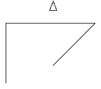

Turtle Geometry [1] is an excellent book that shows how far one can get with a little coding. I wrote a small library in Racket that can run all 2d code examples from the book without much conversion.
#lang racket (require "../src/Racket/turtle/turtle-graphics.rkt")
(clear 1000 1000) (forward 100) (turn 90) (forward 150) (turn -45) (back 100) (turn -45) (penup) (forward 100) (show)  |
(clear 1000 1000) (define (arcr r deg) (for ([i deg]) (forward r) (turn 1))) (define (circles n) (for ([i n]) (arcr 1 360) (turn 40))) (circles 9) (show)
|
(clear 1000 1000) (define (poly side angle steps) (for ([step steps]) (forward side) (turn angle))) (poly 100 72 10) (show)
|
(clear 1000 1000) (poly 100 60 10) (show)
|
(clear 1000 1000) (poly 50 18 20) (show)
|
(clear 1000 1000) (define (newpoly side angle steps) (for ([step steps]) (forward side) (turn angle) (forward side) (turn (* 2 angle)))) (newpoly 100 72 5) (show)
|
(clear 1000 1000) (poly 100 121 20) (show)
|
(clear 1000 1000) (define (polyspi side angle steps) (when (>= steps 1) (forward side) (turn angle) (polyspi (+ side 2) angle (- steps 1)))) (polyspi 10 95 100) (show)
|
(clear 1000 1000) (polyspi 10 70 100) (show)
|
References
| [1] | Harold Abelson and Andrea A. diSessa. Turtle Geometry: The Computer as a Medium for Exploring Mathematics. The MIT Press, Cambridge, Massachussets, London, England, 1980. |